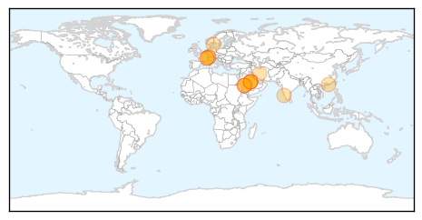

30 Day Trends
Web: 5 alerts, 7 warnings
Twitter: 1 alerts, 0 warnings
Top Articles:
- 0.998
- Traveller with fever tests negative for MERS-CoV
- 0.997
- Screening of passengers begins at airport
- 0.994
- Scientists find compound to fight virus behind SARS, MERS
- 0.994
- Iran announces first MERS death
- 0.994
- Mers research breakthrough raises glimmer of hope
- 0.992
- Saudi Arabia cites one MERS case; Iranian patient dies
- 0.989
- Scientists find coronavirus inhibitor blocking MERS and SARS — RT News
- 0.982
- Iran reports first person killed by Mers virus in country
- 0.981
- Iran reports its first death from MERS virus
- 0.971
- Deadly virus spread to Indiana hasn't spread further
- 0.971
- Scientists Find Compound To Fight Virus Behind SARS and MERS
- 0.963
- Iran reports its first death from MERS virus
- 0.962
- Scientists find compound to fight MERS
- 0.922
- In MERS scare, hospitals lose business to pharmaciesHealthcare
- 0.781
- New coronavirus inhibitor exhibits potent antiviral activity
Top Tweets:
-
No tweets found for May 30, 2014
Web/News Articles

Tweets

Article Locations
Article Confidences